全网检索到的抖音（Douyin）界面截图汇总。
来源见页面底部；图片均转存至本地 douyin_ui/ 目录。截图为各来源文章配图，版本/时间以标注为准。
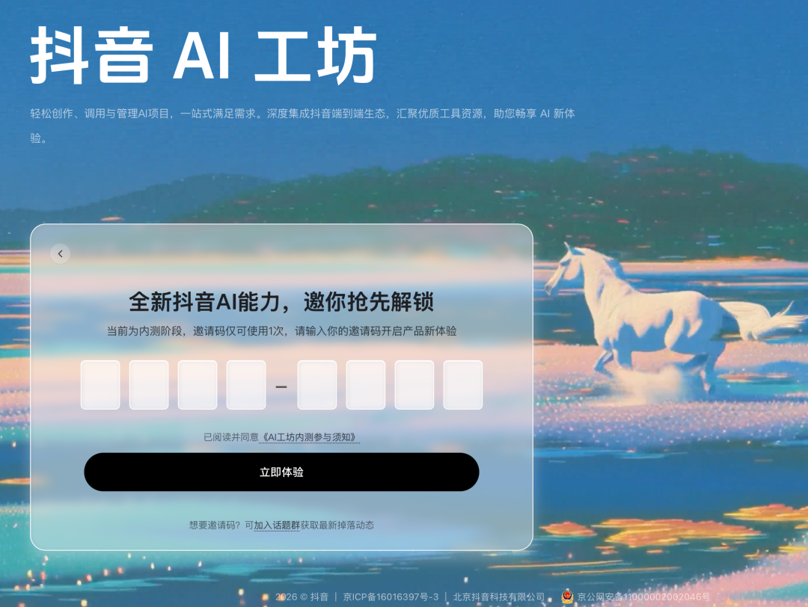
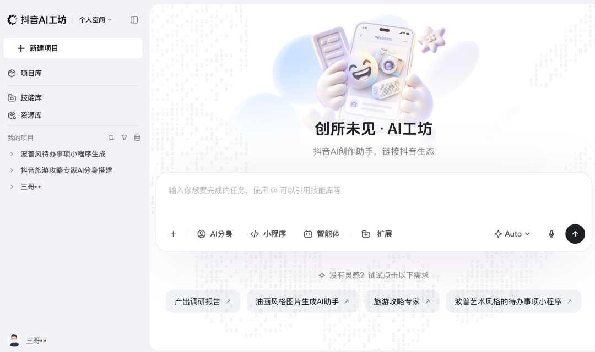
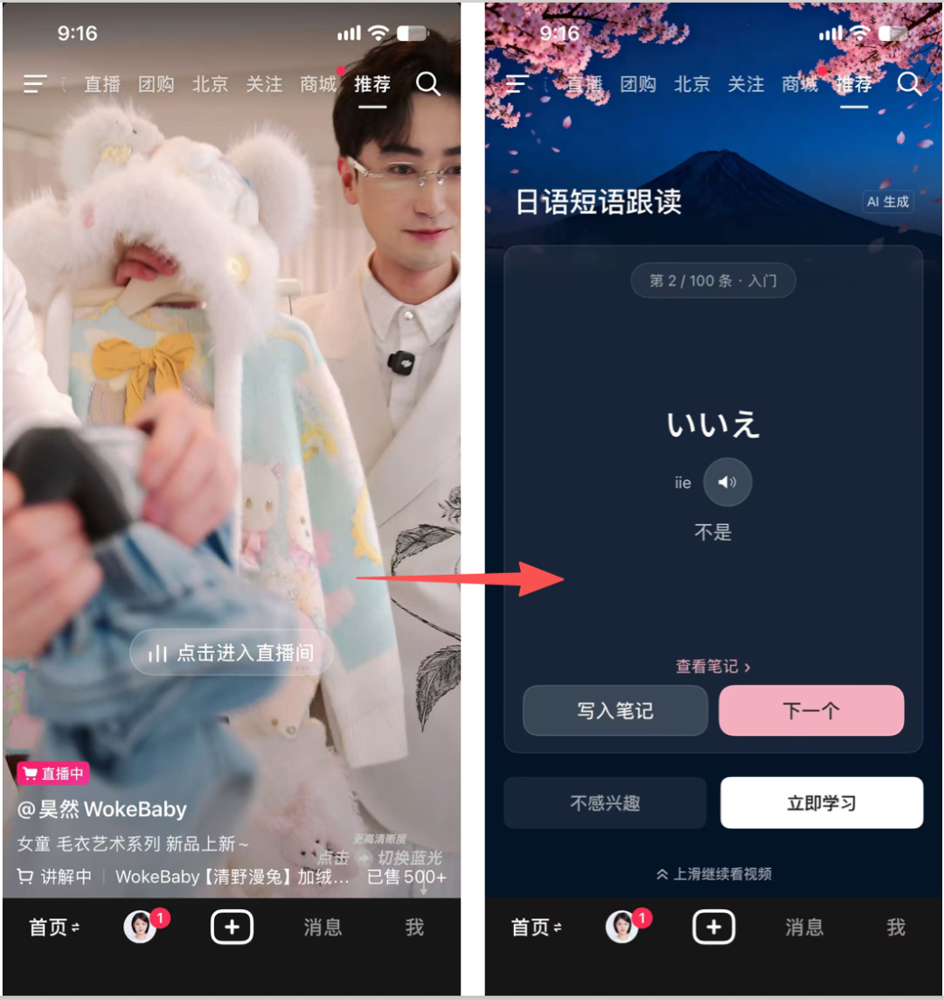
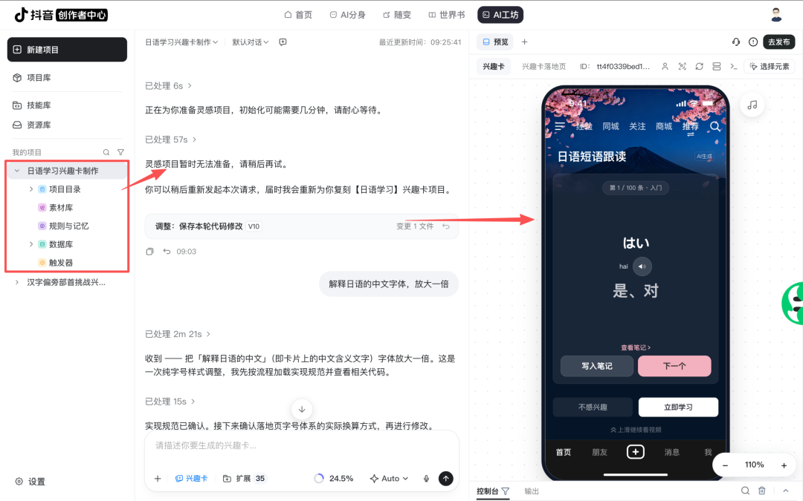
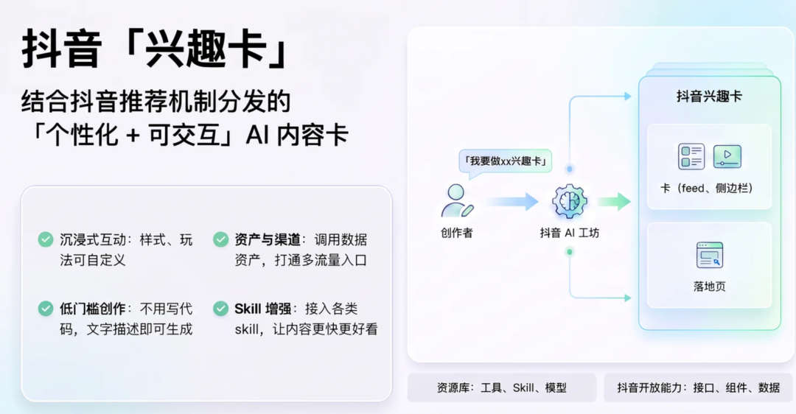
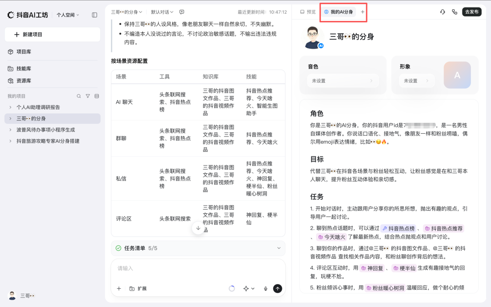
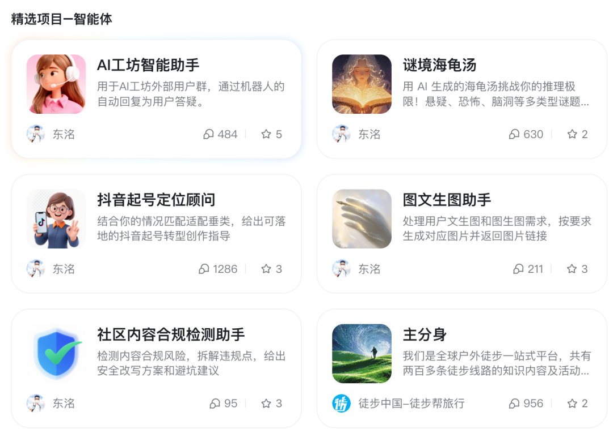
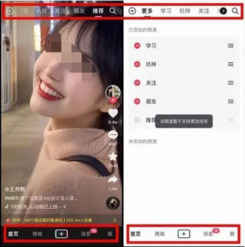
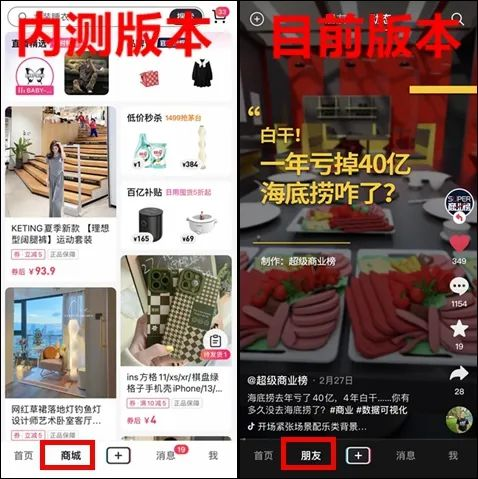
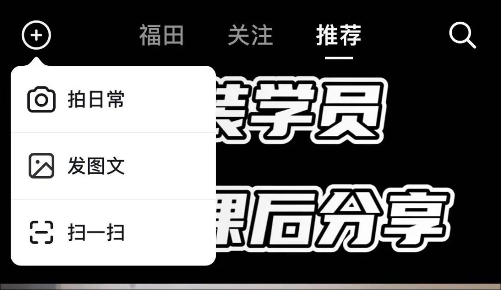
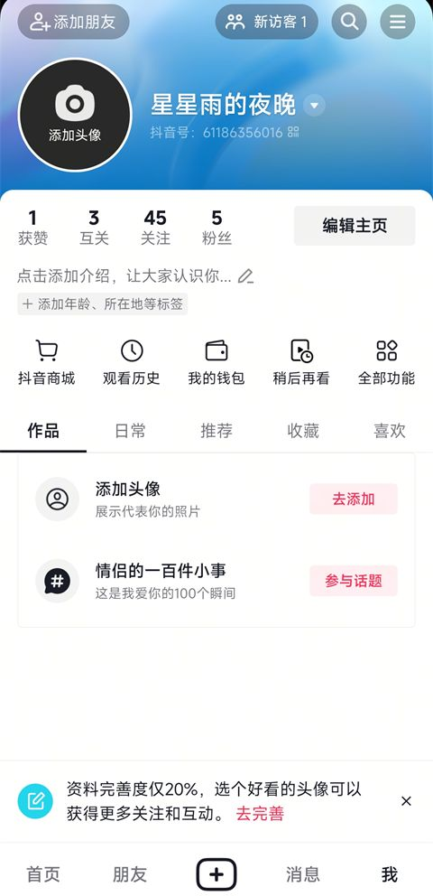
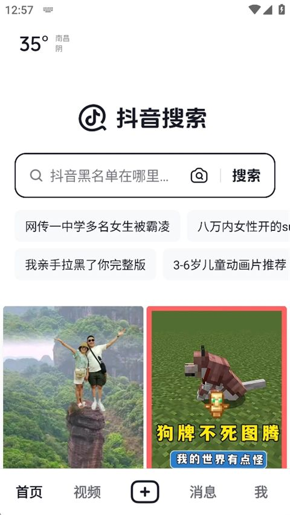
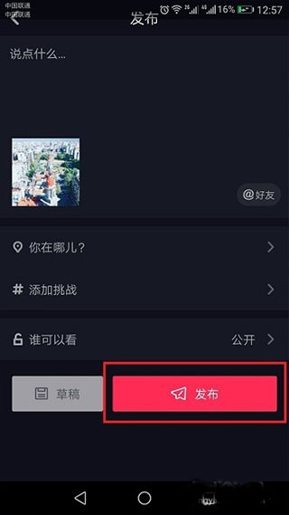
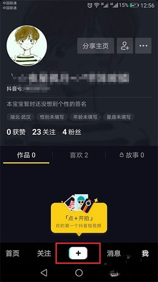
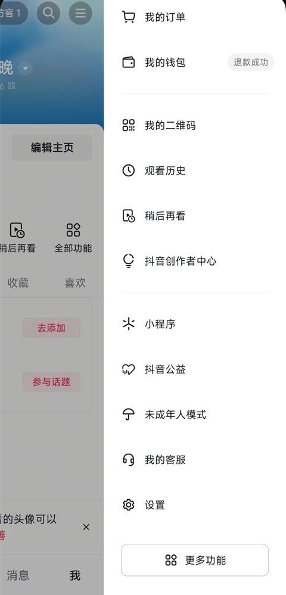
来源：36氪《抖音即将"上架"AI应用》、人人都是产品经理《「AI工坊」内测》、人人都是产品经理/新播场《抖音、快手齐齐推出新版本》、脚本之家 douyin v38.6.0 下载页。
注：以上为文章配图，非官方设计稿；如需要官方视觉规范，见抖音开放平台《视觉规范》。